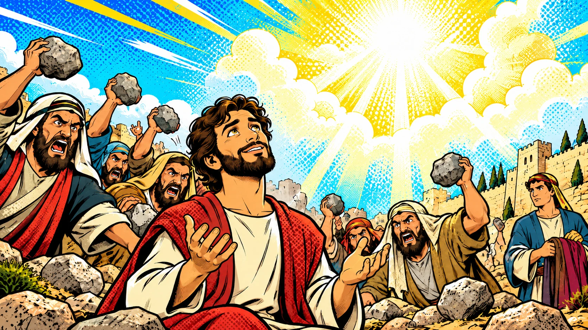

Game Hub
Eight games, including Quiz Showdown, Jeopardy, Word Puzzle Wheel, and Verse Voyager. Scores carry across every game.

This week · Lesson 29The Jews Resist the Holy Spirit
The story of Stephen · Acts 6:1–7:60
Pick where you want to go.
Eight games, including Quiz Showdown, Jeopardy, Word Puzzle Wheel, and Verse Voyager. Scores carry across every game.

This week · Lesson 29The story of Stephen · Acts 6:1–7:60